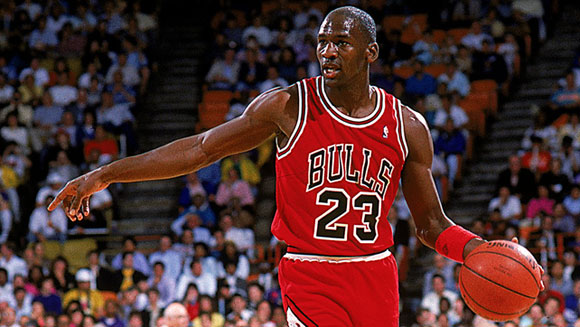

Micheal Jordan

Michael Jeffrey Jordan (born February 17, 1963), also known by his initials MJ,[9] is an American businessman and former professional basketball player. He played fifteen seasons in the National Basketball Association (NBA) between 1984 and 2003, winning six NBA championships with the Chicago Bulls. He was integral in popularizing basketball and the NBA around the world in the 1980s and 1990s, becoming a global cultural icon. His profile on the NBA website states that "by acclamation, Michael Jordan is the greatest basketball player of all time."
Jordan played college basketball for three seasons under coach Dean Smith with the North Carolina Tar Heels. As a freshman, he was a member of the Tar Heels' national championship team in 1982. Jordan joined the Bulls in 1984 as the third overall draft pick and quickly emerged as a league star, entertaining crowds with his prolific scoring while gaining a reputation as one of the game's best defensive players. His leaping ability, demonstrated by performing slam dunks from the free-throw line in Slam Dunk Contests, earned him the nicknames "Air Jordan" and "His Airness". Jordan won his first NBA title with the Bulls in 1991 and followed that achievement with titles in 1992 and 1993, securing a three-peat. Jordan abruptly retired from basketball before the 1993–94 NBA season to play Minor League Baseball but returned to the Bulls in March 1995 and led them to three more championships in 1996, 1997, and 1998, as well as a then-record 72 regular season wins in the 1995–96 NBA season. He retired for the second time in January 1999, returning for two more NBA seasons from 2001 to 2003 as a member of the Washington Wizards. During his professional career, he was selected to play for the United States national team, winning four gold medals—at the 1983 Pan American Games, 1984 Summer Olympics, 1992 Tournament of the Americas and 1992 Summer Olympics—while also being undefeated.
Career
- 1984–1993,1993-1995 Chicago Bulls
- 2001–2003 Washington Wizards
Major trophies
- 6 NBA chamion 1991-1993,1996-1998
- 6 Fianl MVP 1991-1993,1996-1998
- 14 NBA allstar 1985